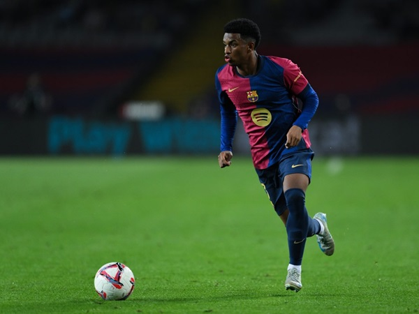

Ruang Ganti Barcelona Memanas Lagi, Raphinha Tak Sopan ke Pelatih dan Kapten Tim
Decul Lovers - Senin, 7 April 2025 |13:45 WIB

Hansi Flick kini tengah menjalani musim perdananya bersama Barcelona.
Meski baru musim pertama, dia menunjukkan hasil yang cukup memuaskan.
Barcelona sejauh ini masih mampu bersaing di 3 kompetisi berbeda yaitu Liga Spanyol, Copa del Rey, dan Liga Champions.
Di Liga Spanyol, Barcelona masih bersaing untuk memperebutkan gelar musim 2024-2025.
Meski sempat terpeleset, Blaugrana kini berhasil bercokol di puncak klasemen dengan koleksi 67 poin dari 30 pertandingan.
Mereka bahkan unggul 3 poin atas Real Madrid yang ada di posisi kedua.
Adapun di Liga Champions, Barcelona berhasil lolos ke babak perempat final.
Di ajang Copa del Rey, Barcelona berhasil mengalahkan Atletico Madrid pada babak semifinal.
El Barca akan berhadapan dengan rival abadi mereka, Real Madrid, di partai final.
Namun, di balik kecemerlangan musim perdana Flick sebagai pelatih Barcelona, tidak lepas dari intrik di ruang ganti.
Namun, di balik kecemerlangan musim perdana Flick sebagai pelatih Barcelona, tidak lepas dari intrik di ruang ganti.
Setelah laga melawan Real Betis di Estadio Olimpic Lluis Companys pada Sabtu (5/4/2025), Raphinha tampak marah selepas pertandingan.
Winger asal Brasil itu bahkan sempat melakukan protes keras kepada wasit.
Belum berhenti di situ, Flick yang masuk ke lapangan mencoba merangkul dan berbicara dengan Raphinha.
Akan tetapi, rafinha tersebut malah menolak dan berteriak kepada pelatihnya.
Raphinha meninggalkan lapangan lebih dulu dan sempat mendapat sambutan dari kapten Barcelona, Marc-Andre ter Stegen.
Ter Stegen berupaya menenangkan Raphinha dengan merangkul dan mengajak berbicara.
Namun, niat baik Ter Stegen ditolak dengan keras oleh Raphinha yang malah mendorong sang kapten.
Dalam wawancara setelah laga, Flick sempat ditanya mengenai sikap Raphinha.
Pelatih asal Jerman itu mengatakan bahwa Raphinha tidak marah ke wasit, tetapi marah ke dirinya.
"Dia marah kepada saya, bukan kepada wasit, dia meneriaki saya," ucap Flick
Sampai informasi ini ditulis, belum ada pernyataan resmi dari Barcelona dan Raphinha terkait insiden itu.